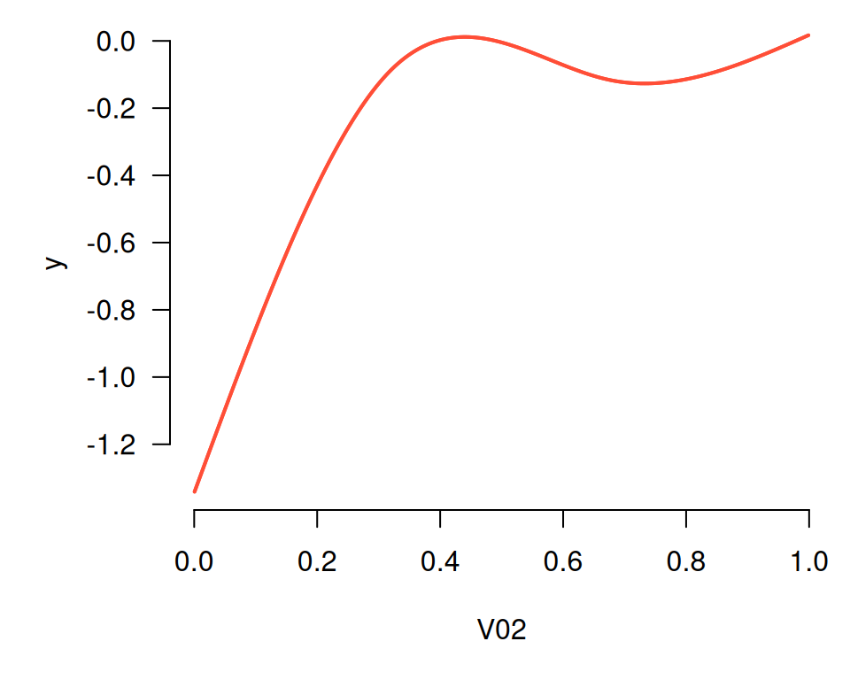
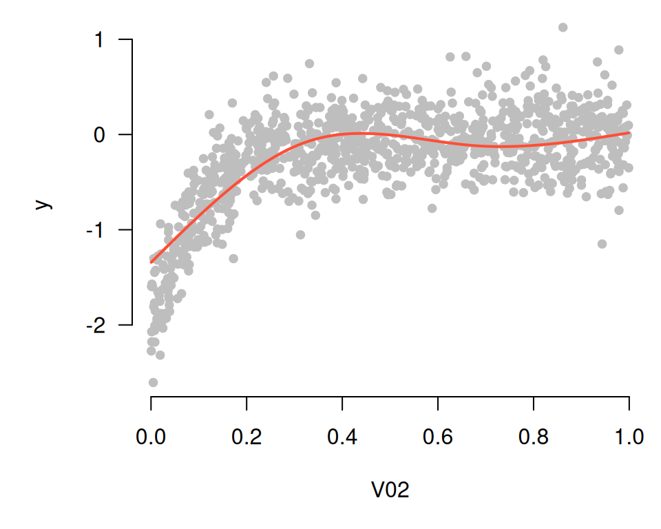
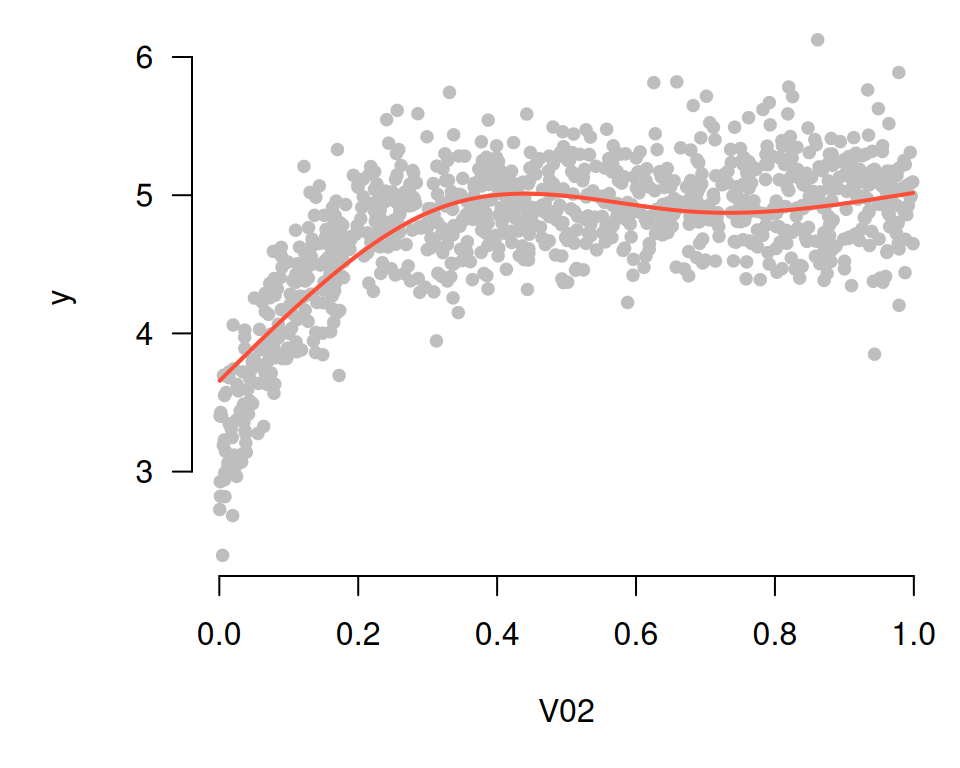
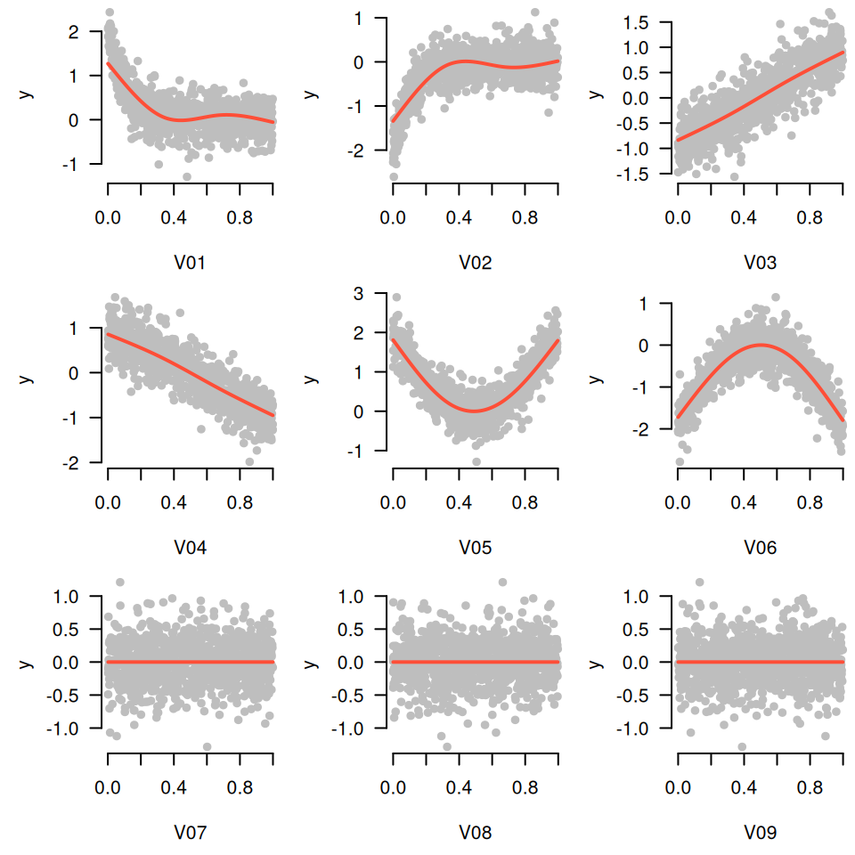
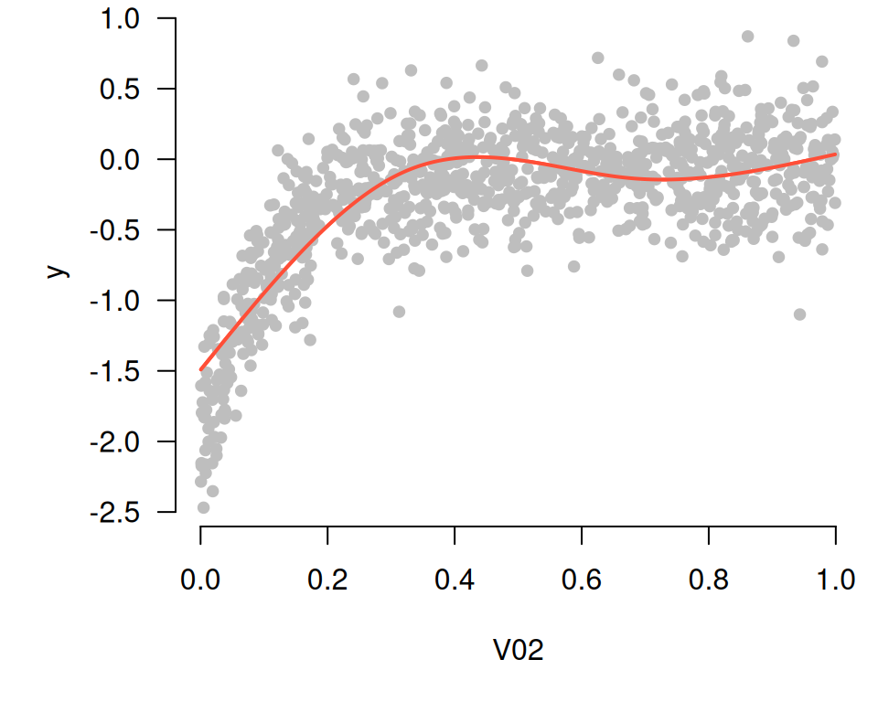

Starting in version 3.4, grpreg offers an interface for setting up, fitting, and visualizing additive models. Numeric features are automatically expanded using spline basis functions. The basic idea was first proposed by Ravikumar et al. (2009), who called it SPAM, for sparse additive models. The original proposal involved the group lasso penalty, but any of grpreg’s penalty functions can be used instead. The basic usage is illustrated below.
Let’s start by generating some nonlinear data:
Data <- gen_nonlinear_data(n=1000)
Data$X[1:5, 1:5]
# V01 V02 V03 V04 V05
# [1,] 0.2655087 0.5308088 0.8718050 0.8023495 0.18776846
# [2,] 0.3721239 0.6848609 0.9671970 0.4794952 0.50475902
# [3,] 0.5728534 0.3832834 0.8669163 0.1774016 0.02728685
# [4,] 0.9082078 0.9549880 0.4377153 0.3971333 0.49629785
# [5,] 0.2016819 0.1183566 0.1919378 0.8142270 0.94735171
dim(Data$X)
# [1] 1000 16The matrix Data$X contains 16 numeric features, named
V01, V02, and so on. Each of those features
can be expanded via the expand_spline() function:
X <- expand_spline(Data$X)
X$X[1:5, 1:5]
# V01_1 V01_2 V01_3 V02_1 V02_2
# [1,] -0.08336582 0.4929033 -0.3278096 0.3891472555 0.4436426
# [2,] 0.04192555 0.5477306 -0.3641231 0.5513529028 0.3304199
# [3,] 0.45894631 0.4124200 -0.2155968 0.0820511444 0.5393188
# [4,] 0.14591619 0.3715847 0.4789722 0.0003839531 0.4039176
# [5,] -0.10101672 0.4080372 -0.2713687 -0.0764163587 0.2604782
dim(X$X)
# [1] 1000 48
head(X$group)
# [1] "V01" "V01" "V01" "V02" "V02" "V02"The resulting object is a list that contains the expanded matrix
X$X and the group assignments X$group, along
with some metadata needed by internal functions. Note that
X$X now contains 48 columns – each of the 16 numeric
features (V01) has been expanded into a 3-column matrix
(V01_1, V01_2, and V01_3). By
default, expand_spline() uses natural cubic splines with
three degrees of freedom, but consult its documentation for additional
options.
This expanded matrix can now be passed to grpreg():
fit <- grpreg(X, Data$y)Note that it is not necessary to pass grouping information in this
case, as it is contained with the X object. At this point,
all of the usual tools coef(), predict(),
etc., can be used, as well as plot.grpreg(). However,
grpreg also offers a function,
plot_spline(), specific to additive models:
plot_spline(fit, "V02", lambda = 0.03)
Partial residuals can be included in these plots as well:
plot_spline(fit, "V02", lambda = 0.03, partial=TRUE)
By default, these plots are centered such that at the mean of x (where x
denotes the feature being plotted), the y value is zero. Alternatively, if
type="conditional" is specified, plot_spline()
will construct a plot in which the vertical axis represents model
predictions as x varies and all other
features are fixed at their mean value:
plot_spline(fit, "V02", lambda = 0.03, partial=TRUE, type='conditional')
In comparing these two plots, note that the general contours are the same; the only difference is the value of the vertical axis. Here are the plots for the first 9 coefficients:
for (i in 1:9) plot_spline(fit, sprintf("V%02d", i), lambda = 0.03, partial=TRUE, warn=FALSE)
In the generating model, variables 3 and 4 had a linear relationship with the outcome, variables 1, 2, 5, and 6 had nonlinear relationships, and all other variables were unrelated. The sparse additive model has captured this nicely.
These tools work with cross-validation as one would expect (by default plotting the fit that minimizes cross-validation error):
cvfit <- cv.grpreg(X, Data$y)
plot_spline(cvfit, "V02", partial=TRUE)
Finally, these tools work with survival and glm models as well. Here, all plots are returned on the linear predictor scale, and the residuals are deviance residuals.